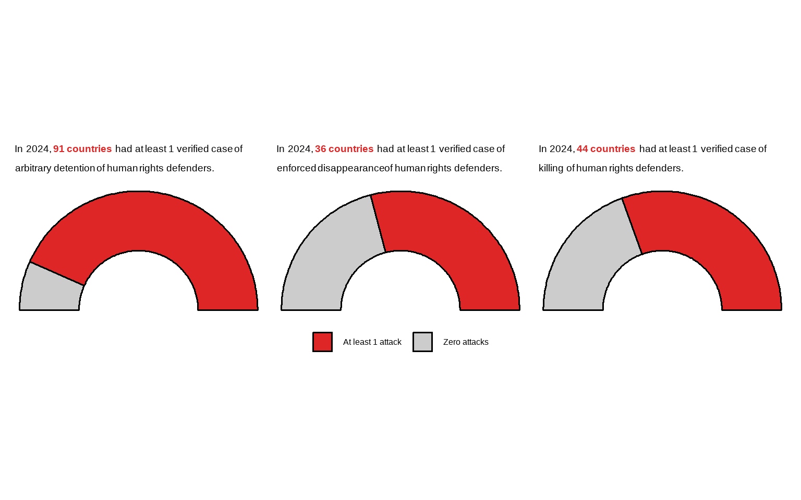
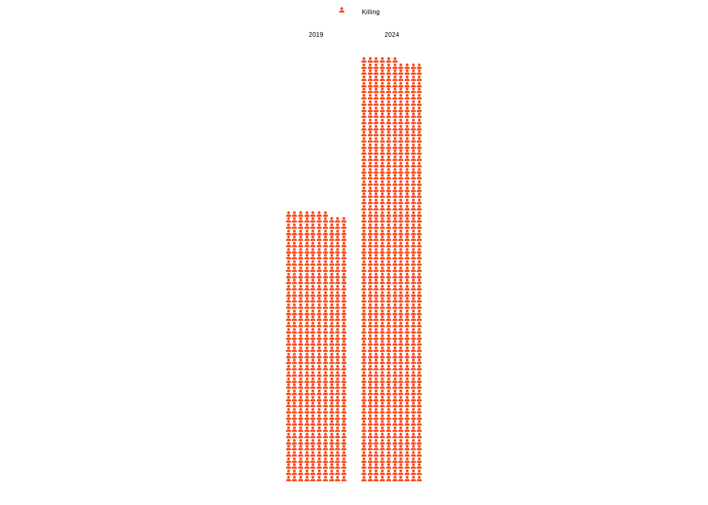

Show the code
eda(getHRDx("SG_INF_ACCSS"))No disaggregations available.
There are 4 regions in the dataset.
Globally-aggregated data is available.
There are 139 countries in the dataset.
The most recent data is from 2024 with 143 observations.Indicators:
public access to information (SG_INF_ACCSS)
HRDs
Internet shutdown (Tier III)
eda(getHRDx("SG_INF_ACCSS"))No disaggregations available.
There are 4 regions in the dataset.
Globally-aggregated data is available.
There are 139 countries in the dataset.
The most recent data is from 2024 with 143 observations.HRDx only has data for 2024. On their site, they interpret this 139 as “139 UN Member States have adopted constitutional, statutory and/or policy guarantees for public access to information.”
In the below linked report, for 2025 they say this is “141 UN Member States that have adopted statutory guarantees for public access to information”, so this is more updated.
So 141 of 193 member states - maybe can do a half donut.
https://unesdoc.unesco.org/in/documentViewer.xhtml?v=2.1.196&id=p::usmarcdef_0000398030&highlight=public%20access%20to%20information&file=/in/rest/annotationSVC/DownloadWatermarkedAttachment/attach_import_c6ad0f0c-5a28-4a66-a11d-ab0a4aa3b6e0%3F_%3D398030eng.pdf&locale=en&multi=true&ark=/ark:/48223/pf0000398030/PDF/398030eng.pdf#%5B%7B%22num%22%3A18%2C%22gen%22%3A0%7D%2C%7B%22name%22%3A%22XYZ%22%7D%2Cnull%2Cnull%2Cnull%5D
ati <- data.frame(response = c("Yes", "No", "In progress"), value = c(115, 4, 4))The actual indicator is a survey of 8 questions, each scored 0 to 2, allowing a total score from 0 to 9.
26 of 123 respondents scored below 4.5. Average score was 6.32/9.
Each country’s score is available in PDF format so we’d have to download each country individually to obtain analyses further than what is in their 2025 report.
Will need links to right to life and to right to liberty here, which mention killings and disappearances specifically
Killings = VC_HRD_KIMICRO
Attacks (has disagg) = VC_HRD_KIDISDE
With disappearances, we highlighted the time trend and regional differences
With killings, time trends for world and region
What to do differently here?
by sex
by attack type
So more sums of countries/comparisons as such
attacks <- getHRDx("VC_HRD_KIDISDE",
params = list(where = list(sexCode = "_T",
datetime = select_years(2024),
areaType = "Country"))) |> count(value, attackTypeCode) |>
left_join(hrdxDisaggregations |> filter(disagg == "attackType") |> select(name, code), by = c("attackTypeCode" = "code")) |>
group_by(name) |>
mutate(num_w_data = sum(n)) |>
ungroup() |>
mutate(at_least_1 = case_when(value > 0 ~ "At least 1 attack",
.default = "Zero attacks")) |>
select(-value, -attackTypeCode) |>
group_by(at_least_1, name) |>
mutate(at_least_1_n = sum(n),
share = at_least_1_n/num_w_data) |>
ungroup() |>
distinct(share, num_w_data, name, at_least_1, at_least_1_n)library(patchwork)
library(ggtext)
plots = list()
for (attack in unique(attacks$name)) {
num_attacks <- attacks |> filter(name == attack, at_least_1 == "At least 1 attack") |> pull(at_least_1_n)
plots[[attack]] <- attacks |>
filter(name == attack) |>
mutate(name = factor(at_least_1),
ymax = cumsum(share),
ymin = c(0, head(ymax, n= -1))) |>
mutate_at(vars(starts_with("y")), rescale, to=pi*c(-.5,.5), from=0:1) %>%
ggplot +
geom_arc_bar(aes(x0 = 0, y0 = 0, r0 = .5, r = 1, start = ymin, end = ymax, fill=at_least_1)) +
coord_fixed() +
scale_fill_manual(NULL, values = c("Zero attacks" = "#cccccc", "At least 1 attack" = "#DF2626")) +
ggtitle(paste0("In 2024, <b style = 'color:#DF2626;'>", num_attacks[1], " countries </b> had at least 1 verified case of ", str_to_lower(attack), " of human rights defenders.")) +
theme_nothing() +
theme(legend.position = "bottom",
plot.title = element_textbox_simple(padding = margin(5.5, 5.5, 5.5, 5.5),
margin = margin(0, 0, 10, 0),
lineheight = 1,
size = 14
))
}
wrap_plots(plots) +
plot_layout(guides = "collect") & theme(legend.position = "bottom")
library(jsonlite)
library(httr)
get_unsdg <- function(code) {
res <- GET(url = paste0("https://unstats.un.org/sdgs/UNSDGAPIV5/v1/sdg/Series/Data?seriesCode=", code))
n_pages <- fromJSON(content(res, "text"), flatten = TRUE)$totalPages
paged_data <- list()
for (n in 1:n_pages) {
page_res <- GET(url = paste0("https://unstats.un.org/sdgs/UNSDGAPIV5/v1/sdg/Series/Data?seriesCode=", code, "&page=", n))
d <- fromJSON(content(page_res, "text"), flatten = TRUE)$data
paged_data[[n]] <- d
}
rbind_pages(paged_data) |> mutate(value = as.integer(value))
}
enf_dis <- get_unsdg("VC_VOC_ENFDIS")
killings <- get_unsdg("VC_VAW_MTUHRA")library(waffle)
library(showtext)
world_ed <- enf_dis |> filter(geoAreaName == "World") |> select(value, dimensions.Sex, geoAreaCode, timePeriodStart) |> mutate(attackType = "Enforced disappearance")
world_k <- killings |> filter(geoAreaName == "World") |> select(value, dimensions.Sex, geoAreaCode, timePeriodStart) |> mutate(attackType = "Killing")
font_add(
family = "FontAwesome5Free-Solid",
regular = system.file("fonts", "fa-solid-900.ttf", package = "waffle")
)
showtext_auto()
pal <- c("Killing" = ghro_palettes$cats2[1], "Enforced disappearance" = ghro_palettes$cats2[2])
rbind(world_ed, world_k) |>
filter(dimensions.Sex == "BOTHSEX", timePeriodStart %in% c(2019, 2024)) |>
ggplot(aes(label = attackType, values = value)) +
geom_pictogram(
aes(colour = attackType),
family = "FontAwesome5Free-Solid",
n_rows = 10,
size = 3,
flip = TRUE
) +
scale_label_pictogram(
name = NULL,
values = c(
"user" ),
) +
scale_color_manual(NULL, values = pal) +
facet_wrap(~timePeriodStart) +
coord_equal() +
theme_void() +
theme(legend.position = "top", legend.direction = "vertical")
I think it might be really interesting/hit harder to have a visualization that keeps going to show the scale
rbind(world_ed, world_k) |>
filter(dimensions.Sex == "BOTHSEX", timePeriodStart %in% c(2019, 2024), attackType == "Killing") |>
ggplot(aes(label = attackType, values = value)) +
geom_pictogram(
aes(colour = attackType),
family = "FontAwesome5Free-Solid",
n_rows = 10,
size = 3,
flip = TRUE
) +
scale_label_pictogram(
name = NULL,
values = c(
"user" ),
) +
scale_color_manual(NULL, values = pal) +
facet_wrap(~timePeriodStart) +
coord_equal() +
theme_void() +
theme(legend.position = "top", legend.direction = "vertical")
~ scrollytelling ~
rbind(world_ed, world_k) |>
filter(dimensions.Sex != "BOTHSEX", timePeriodStart != 2025) |>
group_by(timePeriodStart, attackType) |>
mutate(pct = value/sum(value)*100) |>
select(dimensions.Sex, timePeriodStart, attackType, pct) |>
pivot_wider(names_from = "dimensions.Sex", values_from = pct)# A tibble: 20 × 5
# Groups: timePeriodStart, attackType [20]
timePeriodStart attackType FEMALE MALE `_O`
<int> <chr> <dbl> <dbl> <dbl>
1 2015 Enforced disappearance 28.6 71.4 NA
2 2016 Enforced disappearance 0 100 NA
3 2017 Enforced disappearance 20 80 NA
4 2018 Enforced disappearance 28.1 71.9 NA
5 2019 Enforced disappearance 10 90 NA
6 2020 Enforced disappearance 22.2 77.8 NA
7 2021 Enforced disappearance 44.4 55.6 NA
8 2022 Enforced disappearance 54.5 45.5 NA
9 2023 Enforced disappearance 13.6 85.8 0.592
10 2024 Enforced disappearance 14.9 85.1 NA
11 2015 Killing 13.1 86.9 NA
12 2016 Killing 12.1 87.9 NA
13 2017 Killing 11.3 88.7 NA
14 2018 Killing 10.3 89.7 NA
15 2019 Killing 13.3 86.7 NA
16 2020 Killing 12.1 87.9 NA
17 2021 Killing 16.7 83.3 NA
18 2022 Killing 14.6 85.4 NA
19 2023 Killing 13.5 85.7 0.804
20 2024 Killing 14.4 85.6 NA Slight increase in % of defenders that are women from 2023 to 2024 - but very slight. Might be better to just say that 2 of 7 hrds killed/disappeared is a woman
When we have disaggregated data, can also explore that here.
Since there’s so much in right to life and plenty in right to liberty, going to put regional charts here. Global trends can stay with those respective articles
enf_dis_regions <- enf_dis |> filter(geoAreaName != "World", timePeriodStart == 2024, dimensions.Sex == "BOTHSEX") |> mutate(value = as.integer(value)) |> filter( !is.na(value))
enf_dis_regions |>
ggplot(aes(x = value, y = forcats::fct_reorder(stringr::str_wrap(geoAreaName, 20), value))) +
geom_col(fill = "#006fb7") +
theme_ghro_bar("horizontal", font_size = 28, x_label = "Number of enforced disappearances\nof human rights defenders") +
theme(text = element_text(lineheight = .6))